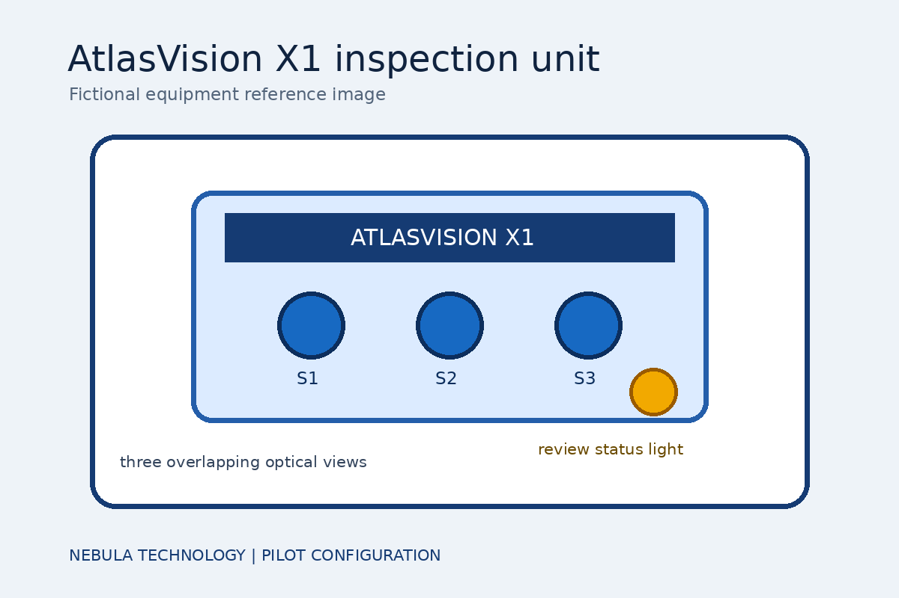
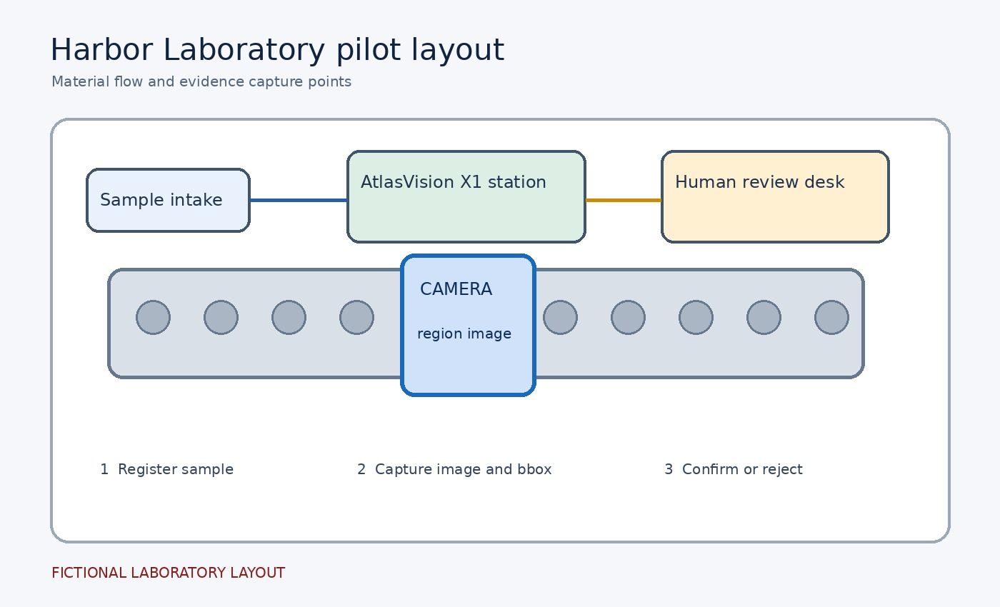
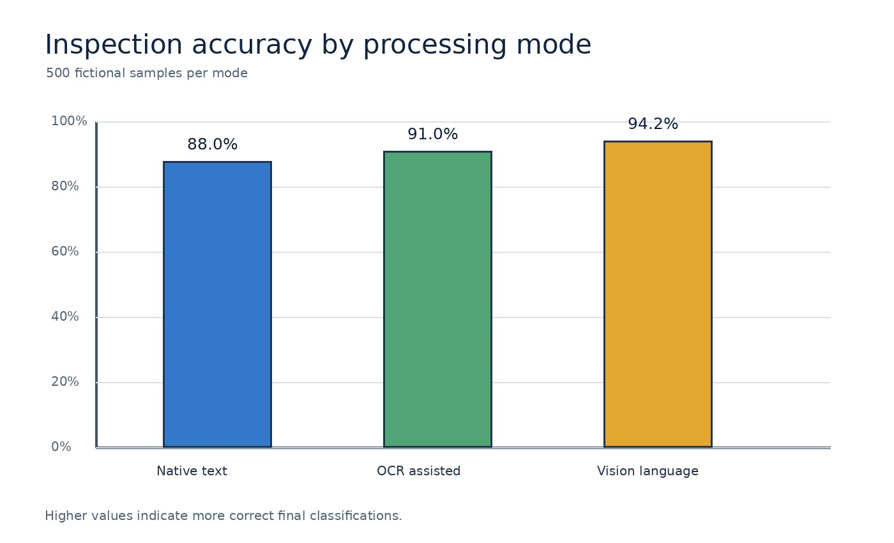

AtlasVision X1 Pilot Evaluation Report
Automated inspection at Harbor Laboratory
Executive summary
Nebula Technology conducted a six-week pilot of the AtlasVision X1 inspection system at Harbor Laboratory in Shanghai. The study examined whether a compact multimodal device could identify surface defects while preserving enough evidence for a human reviewer to reproduce each finding. The evaluation covered 500 fictional manufactured samples and compared a native-text baseline, an OCR-assisted workflow, and a vision-language workflow.
The vision-language workflow achieved an inspection accuracy of 94.2 percent, compared with 91.0 percent for OCR-assisted review and 88.0 percent for the native-text baseline. The result supports continued prototyping, but it does not justify autonomous acceptance of safety-critical parts. Every visual-only quantity, identity claim, and spatial relation remains subject to human review.
Operational context
Harbor Laboratory operates a small validation line used to test optical sensors under controlled lighting. Before the pilot, technicians recorded observations in free-text notes and attached photographs to separate folders. This process made it difficult to connect a reported defect to the exact image region, device configuration, and inspection step that produced the observation.
AtlasVision X1 was installed above the second conveyor station on 14 May 2026. The device uses three blue optical sensors to capture overlapping views and one amber status light to show that a sample is awaiting review. Lead researcher Lin Yue coordinated the pilot with validation engineer Maya Chen and the laboratory operations team.
System design and evidence capture
Each sample passed through an illuminated inspection zone before reaching the manual review desk. The device produced a product image, a cropped defect region, and a short observation record. The record included the sample identifier, capture time, sensor channel, predicted defect class, confidence score, and a reference to the original image rather than an embedded copy.
The pilot treated the original image as evidence and the extracted statement as a candidate assertion. A candidate could enter the knowledge graph only after its source hash, page or image coordinates, schema type, and review state were validated. This separation allowed the team to correct a conclusion without rewriting the source evidence or losing the earlier decision history.
Evaluation method
The team created 500 synthetic samples distributed across scratches, coating gaps, alignment errors, and control cases with no defect. Samples were assigned to five balanced batches and evaluated under the same lighting and conveyor speed. Ground-truth labels were agreed by two reviewers before model output was examined, and disagreements were resolved in a separate adjudication pass.
Three processing modes were compared. The native-text baseline used only the technician note, the OCR-assisted mode added text recovered from labels and screens, and the vision-language mode examined the image together with the note. Accuracy was calculated over the final defect classification. Region-level evidence was checked to confirm that each observation could be traced to the relevant part of the image.
Results and interpretation
The native-text baseline classified 440 of 500 samples correctly. OCR-assisted review increased the correct total to 455, mainly because printed batch labels and equipment messages became available to the extraction process. The vision-language workflow classified 471 samples correctly and was strongest on alignment errors that required comparison between the sample edge and a fixture.
Performance gains were not uniform. Reflections on glossy surfaces produced several false positives, and small coating gaps near the image boundary were occasionally missed. The team therefore recommended retaining region previews and review tasks for high-risk observations. The reported 94.2 percent accuracy describes this fictional pilot only and must not be interpreted as a production benchmark.
Governance limitations and conclusion
This evaluation used synthetic samples, a controlled laboratory layout, and a single device configuration. It did not test long-term drift, adversarial inputs, worker privacy, or performance across independent sites. The media files and measurements in this report are fictional and exist only to exercise document parsing, evidence linking, entity resolution, visual review, and graph commit controls.
The pilot shows how multimodal evidence can improve defect classification while remaining auditable. Nebula Technology will use the findings to refine the prototype and test additional lighting conditions. Any future deployment should preserve the same rule used here: models may propose knowledge, but deterministic validation and accountable human review decide what becomes part of the governed graph.
Figures


